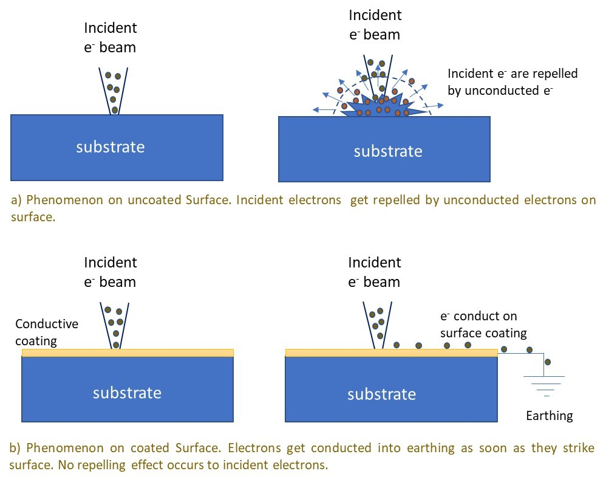
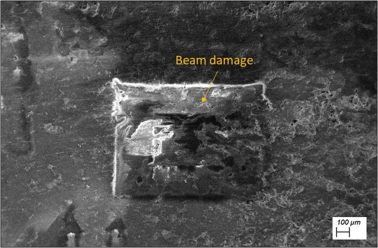

Effect of Beam voltage on conducting and insulating samples
Video on Effect of Beam voltage on conducting and insulating samples

Fig. 1: Phenomenon showing a) repelling of incident electrons on an insulating surface, and b) conduction of electron on conducting/coated surface.
Even when the sample is conducting, the discharge from sample surface to the sample holder may occur through pinning screws, which may be an in-efficient carrier of charge. Thus, a copper-tape or a carbon-tape is routinely crossed over the sample (minimally affecting the region of interest) in order to avoid the problem of sample charging. The area of this conducting tape crossing over the sample becomes non-useful for imaging purpose.
It may also be appreciated by the user that when the image is zoomed-up, a smaller area is being scanned. In other terms, the charge of incident beam should be carried out at a higher rate by the sample at higher magnification. So, if a sample is imaged at higher magnification first, and then we come down to a little lower magnification, a loss in contrast may appear eliciting beam-damage of that region (Fig. 2). Thus, selection of appropriate region for imaging, and utilising appropriate beam parameters are critical in procuring good images of the microstructural features.

Fig. 2: The beam damage in the rectangular portion shows the area in which the beam scanning was performed (at higher magnification), and when zoomed down, the beam-damage area appears quite evident.
When the sample is insulating, and when the charge starts to build up (i.e. when the sample is not coated, or the sample to sample-holder connection is weak, or even when the individual particles sitting on carbon tape are not able to conduct). In that case, the charge (or collection of electrons) start to repel the on-coming electrons. As the incident electrons get repelled, they very easily reach the detector, and saturate the detector. In other word, the entire screen appears very bright, and the actual features are not captured (Fig. 3a). Thus, it becomes important to play with the available parameters to dissipate the developed charge. There are few ways in which this can be done:
(i) Lower the accelerating voltage. The usual imaging voltage is 20kV, which can be lowered down (say to 5 kV) for imaging insulating samples. That way lower energy of electrons does not let them stick to the sample surface and the charge build-up on sample surface is reduced.
(ii) Lowering the vacuum (or operating at higher pressure). The typical vacuum level of 10-5 torr, can be brought down (or pressure can be increased to say 10-3 torr). This pressure will scatter electrons and reduce the charge build-up on insulating surfaces. This lowering of vacuum, though, damages the beam column and filament life. This may also lead to contamination of the chamber as the instrument is operating at lower vacuum levels.
(iii) Another aspect of reducing charge build-up is be restricting the time-duration in which the sample is exposed to incident beam. It is advised that the images can be captured spending least time so the net beam-time is minimised and, accordingly, the charge build-up will be minimised.
(iv) Best way to dissipate the charge is by depositing a conducting coating of gold (Au) or carbon as discussed during the start of the theory section. Now, you will appreciate the clarity of image that can be visualised under scanning electron microscopy after the gold-coating of the same sample (Fig. 3b). Appreciate the sharpness of feature and that saturation of surface no more hinders the observation of features on the sample.

Figure 3: a) Image of uncoated insulating samples showing charging on the surface, and b) image of the ceramic sample after gold coating. Note that the features are now visible and appear sharp.
Note:
Biological samples and polymeric samples may undergo beam damage during imaging. Sample burning or evaporation may also occur upon exposure to electron beam. The build-up of volatile gases may also be very deleterious to the instrument itself. Thus, it is advisable to know the nature of the samples being imaged beforehand. There is a new class of SEM instrument called ‘environmental SEM’ which has the sample chamber separated by a differential pumping across the different SEM sections. Here, biological samples or wet-samples may also be imaged (which may otherwise lose the water vapor and deform).